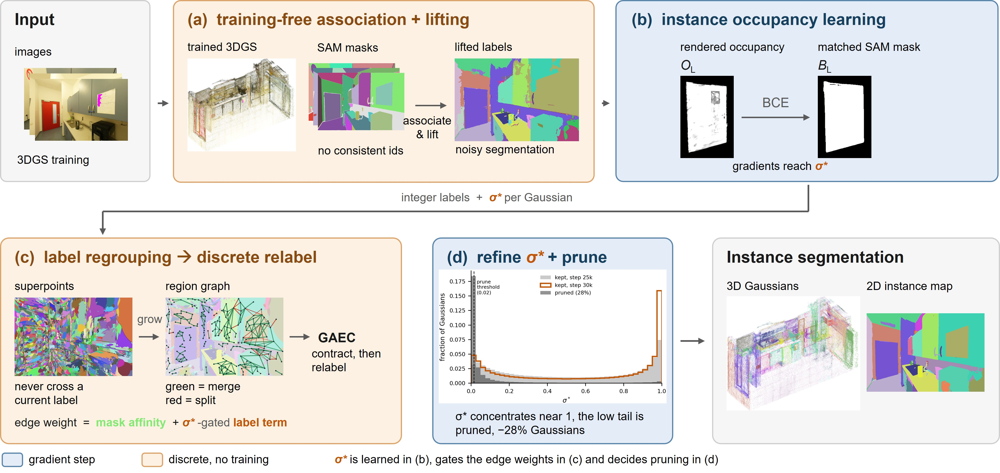
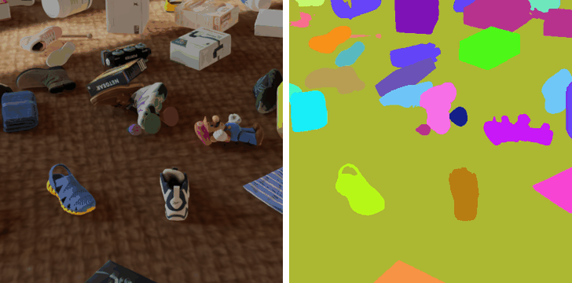
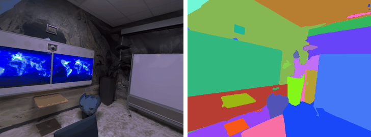
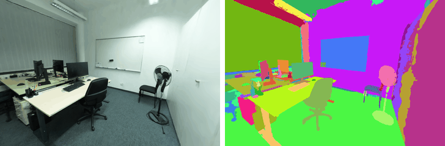
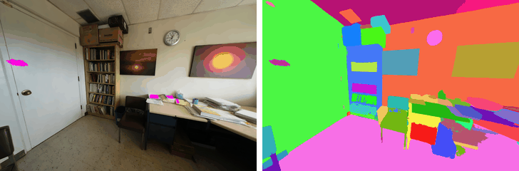
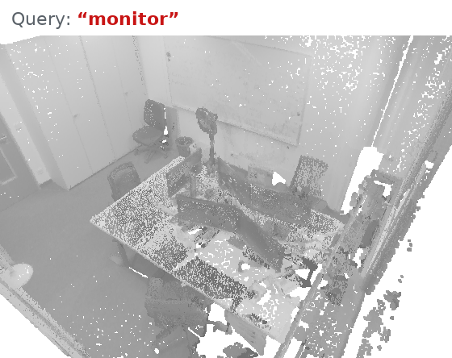
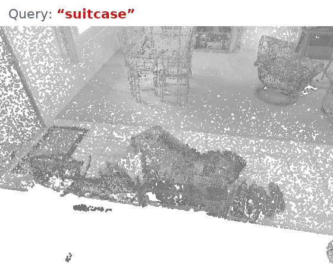

arXiv preprint
3D Gaussian Splatting (3DGS) provides an explicit and efficient scene representation, but its primitives do not naturally expose object-level identity. Existing methods either learn contrastive per-Gaussian features that need post-hoc clustering, or supervise identity encodings with view-consistent 2D masks.
We propose OP2GS, a lightweight object-aware Gaussian representation that augments each primitive with an explicit instance label and a dedicated instance opacity σ*, which serves as an instance occupancy field for object-mask rendering. This dual-opacity formulation decouples visual appearance from instance occupancy, so that σ* can be learned and the instance labels can be corrected without touching the appearance parameters σ and c. We learn σ* with an instance occupancy loss that follows the standard transmittance-based visibility of 3DGS. A discrete regrouping step then corrects the instance labels using multi-view mask consensus.
Since no high-dimensional features are required, OP2GS can be plugged into existing 3DGS training pipelines and applied unchanged to frozen 3DGS assets. On the ScanNet++ validation set with the official class-agnostic protocol, OP2GS improves over OpenSplat3D, the strongest comparable baseline, with both SAM and EntitySeg masks; it is also best on Messy Rooms and, under the Gaga protocol, on Replica, while storing only one scalar and one integer per Gaussian.

A training-free association turns per-view SAM masks into view-consistent ids by multi-view co-visibility consensus, and lifts them into initial, noisy labels.
The instance occupancy loss trains σ* by matching the rendered object mask to the 2D mask, using the same transmittance as the image.
Region growing on superpoints and graph partitioning with GAEC correct the labels, with a label term weighted by σ*.
A final round refines σ* with many-to-one targets and optionally prunes Gaussians that no object claims.
These are trained OP2GS models, rendered in your browser. Every Gaussian keeps its appearance (σ, color) and adds one instance label and one instance opacity σ*. Switch to Instances to render the labels with σ* instead of σ, move the threshold to see which Gaussians the readout keeps, and click an object to extract it.
Drag: rotate · Right-drag or Shift-drag: pan · Scroll or pinch: zoom · Click: isolate object · Esc: show all
Messy Rooms old room with 100 objects, SAM masks; 9 MB. The threshold applies in the Instances view and to an isolated object; the paper reads out instances with σ* > 0.1. Colors come from the zero-order spherical harmonics only.
A camera orbit around each reconstructed scene (Messy Rooms, Replica) or a path along the captured views (ScanNet++). In each animation, the left half is the RGB rendering with the appearance opacity σ, and the right half shows the instances of OP2GS, rendered with the instance opacity σ*.




OP2GS stores no language features. Each instance is rendered as a 2D mask in its best views and classified with MasQCLIP, so a text query selects whole instances. Red marks the mesh vertices assigned to the queried class; the IoU with the ground truth of that class is shown on the right. "Fan" is not one of the benchmark classes and is added to the vocabulary only for this query.


@article{liu2026op2gs,
title = {OP2GS: Feature-Free Gaussian Splatting with Dual Opacity for 3D Instance Segmentation},
author = {Liu, Guiyu and Vaara, Niklas and Mustaniemi, Janne and Kannala, Juho and Heikkil{\"a}, Janne},
journal = {arXiv preprint arXiv:2605.20044},
year = {2026}
}